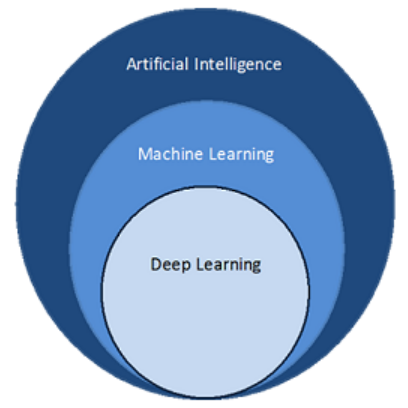
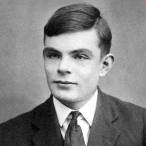

인공지능의 초기 단계
 1950년 영국수학자 앨런 튜링은 ‘계산 기계와 지능(Computing Machinery and Intelligence)’라는 논문에서 기계가 생각할 수 있는지 테스트하는 방법, 지능적 기계의 개발 가능성, 학습하는 기계 등에 대해 기술하였다. 이 기술을 현실화한 튜링머신은 존 폰 노이만 교수에게 직/간접적인 영향을 주어 현대 컴퓨터 구조의 표준이 되었으며. 세간에서는 이것을 인공지능 역사의 시작으로 보고 있다.
인공지능의 발전
1970년대 이후 대부분 기업은 R&D의 방향을 실용적인 통계기술에 집중하게
된다. 현대통계학은 1900년대 피셔/피어슨을 선두로 시작하여, 영국의 조지
박스, 일본의 다꾸치 같은 학자들의 노력으로 발전하게 된다. 이들은
실험계획법 및 통계 분석기술로 제조 품질/생산효율 향상에 영향을 줄 수
있음을 보였다.
이 개념은 데이터마이닝이라는 이름으로 산업에 비효율성을 해결하는
도구로 현재까지 사용되어왔고 빅데이터 기술의 근간이 되어 자리 잡게
되었다.
이후로 한동안 잠잠했던 인공지능 연구는 1980년대 산업계에 전문가 시스템이 도입되며 본격적으로 확산하게 되었다. 전문가 시스템은 아래와 같이 구성되어 있다.
- 지식과 경험의 데이터베이스화
- 의사결정 추론엔진
- 사용자 인터페이스
이 당시 추론엔진 기술은 베이즈(Bayes)기반 확률적 방법과, 또 다른
접근법으로 0과 1 사이에도 여러 가지 값을 가질 수 있는
퍼지(Fuzzy)이론을 통해 다중 값 논리방법을 이용하는 방법이 주로
활용되었다. 퍼지 전문가 시스템이 한동안 인공지능을 대표하는 기술로
자리 잡게 되었으나, 방대한 관리방안과 투자대비 효용성의 한계가
노출되어 인공지능의 연구는 약해지고, 1993년 미국부터 대부분 연구
방향은 슈퍼 컴퓨터와 시뮬레이션 분야로 연구 방향을 전환하게 된다.
하지만 이런 인공지능의 암흑기에서도 리처드 밸벨만 등이 주창한
기계제어를 위한 강화학습(Reinforcement Learning), 조지 박스와 일본의
품질 연구가들이 주창한 실험계획법 및 통계적 공정(품질) 기법들이 산업
분야에 활용되어왔다. 반면 딥러닝의 기초모델인 역전파 등의 획기적인 AI
연구들이 발표는 되었지만, 컴퓨터 성능 및 제한적인 활용, 머신러닝
알고리즘으로 대체되는 등 여러 제한으로 인하여 세상에 주목 받지 못하고
사장되어 갔다. 하지만 이런 암흑기에도 기존에 수학적으로만 증명된
심층신경망을 실질적으로 구현할 수 있는 컴퓨터 성능과 알고리즘 개선은
여러 연구자들에 의해서 계속적으로 이루어져왔다.
딥러닝과 머신러닝의 부상
2000년대에 이르러 힌튼교수의 Deep Belief Network를 기반으로
심층신경망(딥러닝) 기술이 실용화 가능성이 보이기 시작했다. 특히
Deep-CNN은 이미지 인식 성능 평가에서 괄목할 성과를 보였고 이를
기점으로 전문가들 사이에서 신경망 기반 인공지능 기술이 재조명되게
되었다. 일례로 이렇게 딥러닝의 가능성이 증명되자 2014년 구글은
DeepMind Technologies를 4억달러에 인수했다.
그 이후 16년 알파고1.0 이 이세돌을 이기고. 17년 2.0(비지도학습
소량데이터 기반 자가학습)으로 커제 및 탑클라스 바둑기사들에게
승리하면서, 인공지능(AI)기술이 일반인들에게도 확실히 인식되고, 완전히
재조명되는 계기가 되었다.
이러한 꾸준한 발전으로 실용성이 없어 보이던 또다른 연구 또한 조금씩
성과를 보이고 있으며, 딥러닝 등장 이후 AI는 빠른 발전을 보이고 있다.
현재와 미래
AI의 발전은 지난 수십 년 동안 눈부신 성장을 이루었으며, 현재와 미래 전망 모두 매우 밝은 분야이다. 오늘날 인공지능은 OpenAI에 의해 개발된 GPT-3와 같은 자연어 처리 기술, Apple Face ID에 사용된 컴퓨터 비전 기술, 자율 주행 차량 등 다양한 분야에서 사용되고 있으며, 추후 인공지능 기술이 더욱 정교해지고 인간 삶의 모든 측면에 사용될 것으로 예상된다.